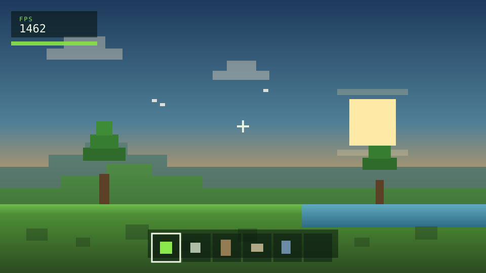
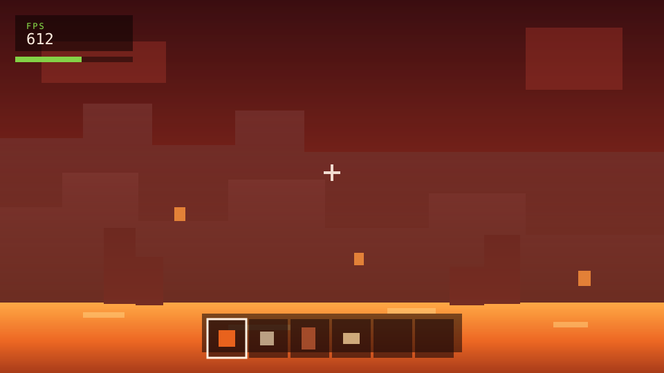
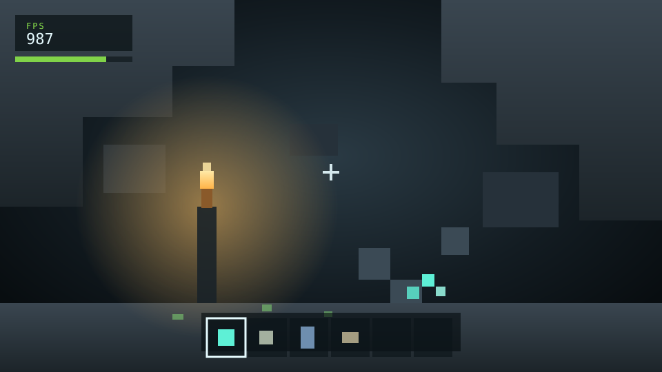
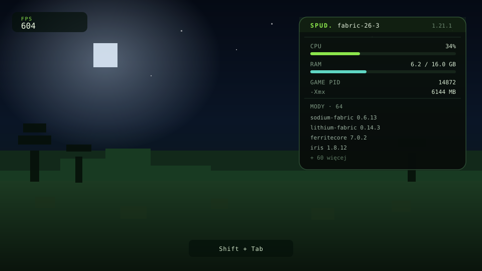
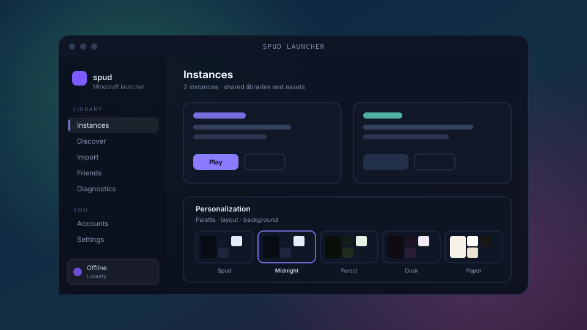
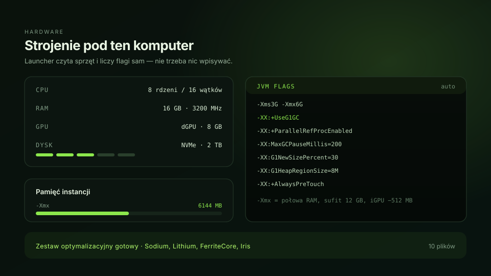

Izolowane instancje
Każda paczka ma własny .minecraft. Biblioteki i assety są współdzielone, więc miejsce nie znika, ale mody jednej paczki nie wywracają drugiej.
v0.1.0 · Rust + Tauri v2 · MIT
Spud Launcher to lekki launcher Minecrafta na Rust i Tauri. Izolowane instancje, Modrinth pod ręką i zestaw optymalizacyjny, który realnie podnosi FPS — bez Electrona, bez telemetrii, bez procesów widmo w tle.
Wydajność
Launcher sam nie rysuje klatek — robi to twoja karta. Ale instaluje jednym kliknięciem zestaw optymalizacyjny (Sodium, Lithium, FerriteCore i spółka), zamiast kazać ci szukać dwudziestu jarów po forach. To ta różnica, którą widzisz na liczniku.
Wartości orientacyjne, zmierzone na średnim sprzęcie z 64 modami — u ciebie wyjdzie inaczej, bo FPS zależy od karty, procesora i rozdzielczości. Kierunek jest ten sam.
Funkcje
Dziewięć rzeczy, które launcher załatwia sam — i których nie musisz już robić w eksploratorze plików.
Każda paczka ma własny .minecraft. Biblioteki i assety są współdzielone, więc miejsce nie znika, ale mody jednej paczki nie wywracają drugiej.
Szukanie, instalacja i aktualizacja modów, resource packów i shaderów bez wychodzenia z okna. Paczki instalują się jednym kliknięciem.
Brak Javy 21? Launcher pobiera Temurin z Adoptium, sprawdza SHA-256 i podłącza runtime do instancji. Nie musisz wiedzieć, która wersja jest potrzebna.
Log gry leci do panelu w czasie rzeczywistym, z buforem i kopiowaniem jednym kliknięciem. Crash logi czytają się same, kiedy mod się wysypie.
Cała paczka do jednego pliku — .zip z wszystkim albo .mrpack z linkami do CDN Modrintha. Wysyłasz koledze, on klika import.
Kilka kont offline i Microsoft, przełączanie z sidebara bez wylogowywania. Logowanie Microsoft idzie przez OAuth 2.0 device code — w przeglądarce, nie w launcherze.
Wpisujesz nick, launcher pokazuje, na jakim serwerze ktoś gra i jaką ma instancję. Paczkę można skopiować bez pytań o modlistę.
Na profilu pojawia się, że grasz przez Spud Launcher — z nazwą instancji i wersją gry. Bez dodatkowych aplikacji.
Prism, MultiMC, PolyMC, Modrinth App, CurseForge, ATLauncher, GDLauncher, Technic i czysty .minecraft — skan i nowa instancja w minutę.
Co doszło
Wszystko poniżej jest już w kodzie, w testach i w wydaniu — nie w planach na przyszły kwartał. Każda funkcja ma własną stronę w dokumentacji.
Launcher czyta rdzenie, pamięć i kartę, a potem sam liczy flagi JVM w stylu
Aikara: G1GC, próg pauzy, regiony. -Xmx to połowa RAM-u z sufitem
12 GB, a przy grafice zintegrowanej odejmuje jeszcze 512 MB dla GPU.
Każdy jar trafia do wspólnego magazynu pod SHA-256 i wraca do instancji jako hardlink. Ten sam Sodium w pięciu paczkach to jeden plik na dysku, a nie pięć kopii. Nieużywane wpisy sprząta GC.
Własny panel w launcherze, własne zdarzenia, własny zapis — w JavaScripcie, bez kompilowania niczego. Wtyczki są domyślnie wyłączone, a błąd jednej nie przewraca reszty: pięć wyjątków i wtyczka ląduje na liście wyłączonych.
Heurystyki działają offline i od razu wskazują winowajcę: brak pamięci, konflikt modów, zła Java, uszkodzony jar. Model językowy wchodzi tylko po twojej zgodzie na konkretny log — zredagowany, bez nicków i ścieżek, z kluczem w systemowym keyringu.
Instancja leci do folderu, który już synchronizujesz — dysk sieciowy, Dropbox, cokolwiek. Snapshot ma hash w nazwie i jest sprawdzany przy pobieraniu, a pull nigdy nie nadpisuje lokalnej paczki: wraca jako nowa instancja.
Panel na wierzchu gry: CPU, RAM, pamięć procesu, PID, wersja i lista modów. Osobne okno Tauri, więc launcher nie wstrzykuje nic do JVM i nie może wysypać gry. Domyślnie wyłączony.
Pięć palet w wersji ciemnej i jasnej, własna tapeta z folderu, gęstość wierszy, zaokrąglenia i szerokości kolumn. Wszystko na żywo, przed zapisem; wyjście z ustawień bez kliknięcia „Save” przywraca poprzedni wygląd.
Z gry
Kliknij kadr, żeby powiększyć.






Migracja
Launcher skanuje profile innych launcherów, czyta wersję gry i loader — nawet gdy launcher źródłowy nie zapisuje żadnych metadanych — i tworzy z nich normalne, edytowalne instancje.
NSIS per-user, bez uprawnień administratora. Jest też MSI i wersja portable.
Wybierz wersję gry i loader — Fabric, Quilt, Forge, NeoForge albo czysty vanilla.
Launcher dociąga client jar, biblioteki i assety, a Javę dobiera sam.
Instalator jest niepodpisany, więc SmartScreen może pokazać „Windows protected your PC” — wybierz More info → Run anyway. Build jest publiczny, możesz go sprawdzić albo zbudować sam.